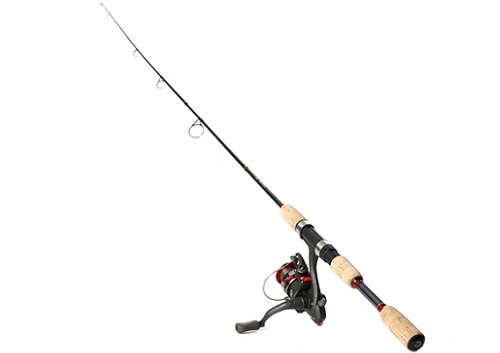
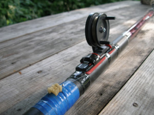

Спиннинг
Поплавочная удочка
 
Классический спиннинг состоит из удилища с пропускными кольцами, катушки, лески. Удилище представляет собой составную часть удочки рыболовной, которая является ключевым элементом рыбацкой снасти. Форма удилища характеризуется тонким длинным конусом. Рыболов удилища держит за их толстую часть, которая носит название «комель». Тонкий противоположный конец называется вершинкой, и именно к ней прикрепляется леса для рыбной ловли.Спиннинг рассчитан на активную рыбалку с применением движущейся приманки, в основном в периоды сезонной полноводности водоемов (весна и осень). Для работы со спиннингом требуются определенные знания, опыт и мастерство, поскольку техника ловли спиннингом достаточно сложна и требует частой перемены места. Приманка забрасывается в заданную точку водоема, а затем леска постепенно наматывается на катушку, создавая иллюзию естественного движения приманки.
Эта снасть наиболее распространена. Она проста по своему устройству, не требует особого навыка при забросе.Нередко удочкой называют само удилище. Неверно. Оно лишь стержень, хлыст из различного материала, без какой-либо оснастки. Удилище поплавочной удочки должно быть не менее 2,5 м в длину, обладать легкостью и достаточной гибкостью.Поплавочная удочка состоит из удилища, закреплённой на нём лески с поплавком, грузилом и крючком с приманкой.С поплавочной удочкой может использоваться любая выпускаемая промышленностью леска, в отдельных случаях, можно использовать крепкие нити.